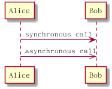
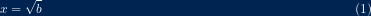

org tutorial
Table of Contents
- 1. intro
- 2. Editting
- 2.1. outline
- 2.2. Headlines
- 2.3. Visibility Cycling
- 2.4. Structure Editting
-
- 2.4.0.1. M-RET (org-meta-return)
- 2.4.0.2. M-LEFT (org-do-promote)
- 2.4.0.3. M-RIGHT (org-do-demote)
- 2.4.0.4. M-S-LEFT (org-promote-subtree) M-S-RIGHT (org-demote-subtree)
- 2.4.0.5. M-UP (org-move-subtree-up) M-DOWN (org-move-subtree-down)
- 2.4.0.6. C-c @ (org-mark-subtree)
- 2.4.0.7. C-c C-x C-w (org-cut-subtree)
- 2.4.0.8. C-c C-x M-w (org-copy-subtree)
- 2.4.0.9. C-c C-x C-y (org-paste-subtree)
-
- 2.5. Plain List
- 2.6. Drawwer 抽屉
- 2.7. Block
- 2.8. FootNote
- 3. Table
- 4. Hyperlinks
- 5. Markup for Rich Contents
- 6. Working with Source Code
- 7. Export
- 8. publish
- 9. Bebal
- 10. plantuml
- 11. ref
1 intro
本文以功能模块的形式介绍org-mode
2 Editting
2.1 outline
org mode 是基于 Outline mode
2.2 Headlines
outline 第一个功能就是 Headlines， 也就是 “*” "" "*" 这样的标题分级。 在 markdown 中使用的是"#"
2.3 Visibility Cycling
这就是说，每一节的可见性是一个圈，通过在行首，按Tab， 可以切换可视性。 以下是快捷键和函数。
- TAB (org-cycle)
- （org-global-cycle) 全局切换
- (outline-show-all) 全部展开
- (org-copy-visible) 把当前可见的内容拷贝
- (outline-show-children) 把当前节点的子节点显示出来
- (outline-show-subtree)把当前节点的所有子树显示出来
2.4 Structure Editting
结构编辑，这个功能就是提供了一个结构编辑的快捷键
以下几个都是配合M键和方向键或者shift键的操作，都很实用
2.4.0.1 M-RET (org-meta-return)
这个很好用，就是快速的加一个Headline
2.4.0.2 M-LEFT (org-do-promote)
把当前Headline提升一个等级
2.4.0.3 M-RIGHT (org-do-demote)
把当前Headline降低一个等级
2.4.0.4 M-S-LEFT (org-promote-subtree) M-S-RIGHT (org-demote-subtree)
调整整个子树的等级
2.4.0.5 M-UP (org-move-subtree-up) M-DOWN (org-move-subtree-down)
调整子树顺序
以下几个是对子树的选择复制和粘贴
2.4.0.6 C-c @ (org-mark-subtree)
2.4.0.7 C-c C-x C-w (org-cut-subtree)
2.4.0.8 C-c C-x M-w (org-copy-subtree)
2.4.0.9 C-c C-x C-y (org-paste-subtree)
2.5 Plain List
三个类型的List
- undordered list 以"-" "+" 或者"*"开头，受markdown影响，使用"-"就可以
- orderered list 以 "1." 或者"1)" 受markdown影响使用1.
- Description list ,属于unorder list 以‘::’ 分隔描述项和描述
描述项示例
- Elijah Wood :: He plays Frodo - Sean Astin :: He plays Sam, Frodo's friend. I still remember him
- Elijah Wood
- He plays Frodo
- Sean Astin
- He plays Sam, Frodo's friend. I still remember him
对headline的一切操作都适用于列表
2.6 Drawwer 抽屉
Still outside the drawer :DRAWERNAME: This is inside the drawer. :END: After the drawer.
这玩意也就是在org mode里可以用 在markdown 和html里都没有用。 就是快速定义了一个可以收起的内容。 内容的标题可以自己定义。 DRAWERNAME 可以随便起 ， 在DRAWERNAME上TAB可以收起内容
2.7 Block
使用 ‘#+BEGIN’ … ‘#+END’ 定义一段block
Some example from a text file.
org block type 总共有以下几种
- “center”
- “comment”
- “dynamic”
- “example”
- “export”
- “quote”
- “special”
- “verse”
- "src"
2.8 FootNote
注脚，感觉这个也很有用.
The Org homepage[fn:1] now looks a lot better than it used to. 在markdown 和html里都有用。 [fn:1] The link is: https://orgmode.org
The Org homepage1 now looks a lot better than it used to.
在markdown 和html里都有用。
3 Table
| Name | Phone | Age | |-------+-------+-----| | Peter | 1234 | 17 | | Anna | 4321 | 25 |
| Name | Phone | Age |
|---|---|---|
| Peter | 1234 | 17 |
| Anna | 4321 | 25 |
org-table-* 有很多函数可以用。
每次在表格中打回车，或者TAB切换单元格，都会自表格自动对齐。
4 Hyperlinks
添加一个link, 是执行C-c C-l runs the command org-insert-link。 它会让你选择协议，选择描述。 完成后，link就只显示描述，想要编辑link，光标放到上面，再运行C-c C-l就可以了。 alinkexample
4.1 internal link
首先定义一个target 是使用"<<mytarget >>" 引用就是通过 "[[][]]"语法，里面第一个播放是target名，第二个是描述。
然后这里引用连接fisttargetdist
我这里是一个taget<<fisttaget>> 然后这里引用连接[[fisttaget][fisttargetdist]]
在org mode里可以通过 C-c C-o 跳到目标
Here we refer to item 2.
如果Link写的是headline 可以直接跳转，不必定义target 2.7
4.2 external link
5 Markup for Rich Contents
5.1 Paragraphs
verse的意思是诗文， 在这个块下，你怎么写的它就怎么显示.
#+BEGIN_VERSE
Great clouds overhead
Tiny black birds rise and fall
Snow covers Emacs
---AlexSchroeder
#+END_VERSE
Great clouds overhead
Tiny black birds rise and fall
Snow covers Emacs
—AlexSchroeder
QUOTE 引言引用 ， 一般在引用名人名言时使用。 它会将—以前的都放在一行。
Great clouds overhead Tiny black birds rise and fall Snow covers Emacs
—AlexSchroeder
Everything should be made as simple as possible, but not any simpler —Albert Einstein
CENTER 居中引用，在块里使用\\是强制换行
Everything should be made as simple as possible,
but not any simpler
BEGINEXAMPLE 也是比较常用的。用于代码示例
5.2 Emphasis and Monospace强调
‘*bold*’, ‘/italic/’, undefined, verbatim and code ,
bold
italic
下划线
淡化
<php? echo "hello world">?
‘*bold*’, ‘/italic/’, _undefined_ =verbatim= and ~code~, *bold* /italic/ _下划线_ =淡化= ~<php? echo "hello world">?~
注意符号两边都必须是空格。
5.3 下标和上标
adius of the sun is R_sun = 6.96 x 10^8 m. On the other hand,
the radius of Alpha Centauri is R_{Alpha Centauri} = 1.28 x R_{sun}.
~
The radius of the sun is Rsun = 6.96 x 108 m. On the other hand, the radius of Alpha Centauri is RAlpha Centauri = 1.28 x Rsun.
#+OPTIONS: ^:nil
可以取消这种解析。
5.4 符号
使用类LaTeX-like syntax ， 以\开头 org-entities-help 可以查到所有的符号
箭头 \to
Pro tip: Given a circle \Gamma of diameter d, the length of its
circumference is \pi{}d.
箭头 →
Pro tip: Given a circle Γ of diameter d, the length of its circumference is πd.
5.5 embbed LaTeX
LaTex 是基于Tex 的宏库。
5.5.1 LaTeX fragments
安装Latex
千万别用apt get 装 太老了 sudo apt-get install texlive-full sudo apt-get install texmaker
更严重的问题是导出pdf也有问题，经查是因为apt安装的Tex live太老了是2015 现在都 2018了。 安装看下面的连接。 texlive /usr/local/texlive/2018
这个片段，当导出成LaTex 保持不变，当导出成HTML的时候，它可以被弄成图片，或者 通过 MathJax 一个jsy加导成svg
\begin{equation}
x=\sqrt{b}
\end{equation}
If $a^2=b$ and \( b=2 \), then the solution must be
either $$ a=+\sqrt{2} $$ or \[ a=-\sqrt{2} \].
\begin{equation}
x=\sqrt{b}
\end{equation}
If \(a^2=b\) and \( b=2 \), then the solution must be either \[ a=+\sqrt{2} \] or \[ a=-\sqrt{2} \].
测试发现在html中有效，它引用了一些js库来显示LaTex 公式， 在markdown中无效。
org-preview-latex-default-process 变量设置了图片转换工具,它可能是 ‘dvipng’, ‘dvisvgm’ or ‘convert’ 之一。 http://sourceforge.net/projects/dvipng/, http://dvisvgm.bplaced.net/
5.6 Literal Examples
这节讲的就是如果你的文档里是示例，或者代码示例，你就需要一个单独的空间，在这个空间里的输入不走org解释器，如果 是指定了语言，还可以按照emacs在那个语言下的显示颜色和风格来显示代码， 不指定语言就使用BEGINEXAMPLE.
(defun org-xor (a b) "Exclusive or." (if a (not b) b))
测试结果，html 很好， markdown 不能显示代码颜色。
可以给代码显示行号
20: ;; This exports with line number 20. 21: (message "This is line 21")
31: ;; This is listed as line 31. 32: (message "This is line 32")
5.7 image
没有描述的连接，就是内嵌的显示 [[]]
org-toggle-inline-image 可以直接在org buffer里显示图片
6 Working with Source Code
首先 org block type 总共有以下几种
- “center”
- “comment”
- “dynamic”
- “example”
- “export”
- “quote”
- “special”
- “verse”
- "src"
这一节专注就是src block
6.1 code block structure
#+NAME: <name> #+BEGIN_SRC <language> <switches> <header arguments> <body> #+END_SRC
ls
switches 以-开头，比如前面用过的-n header argument 以 :argname value 这样报的形式出现，可以有多个。
| 1 |
| 2 |
| 3 |
| 4 |
(length table)
上面table-length函数，返回example-table的长度，使用org-babel-excute可看结果是4,
org 2.0以后的版本有org-insert-structure-template 函数， 你也可以使用下面自己写的函数。
(defun org-insert-source-block (name language switches header) "Asks name, language, switches, header. Inserts org-mode source code snippet" (interactive "sname? slanguage? sswitches? sheader? ") (insert (if (string= name "") "" (concat "#+NAME: " name) ) (format " #+BEGIN_SRC %s %s %s #+END_SRC" language switches header ) ) (forward-line -1) (goto-char (line-end-position)) )
6.1.1 header argument
6.1.1.1 系统级参数
定义于org-babel-default-header-args 变量之中。 各个语言相应的可以改变这些设置，在org-babel-default-header-args:<LANG> 中定义
6.1.1.2 buffer org 参数
可以使用org property来设置
#+PROPERTY: header-args:R :session *R* #+PROPERTY: header-args :results silent
也可以结构树下覆盖
*sample header :PROPERTIES: :header-args: :cache yes :END:
再就是直接在block中设置了
#+NAME: factorial #+BEGIN_SRC haskell :results silent :exports code :var n=0 fac 0 = 1 fac n = n * fac (n-1) #+END_SRC
6.1.1.3 code block的环境
- 传参
通过 var header argument 可以传入参数
:var NAME=ASSIGN
参数可以传入table ,这样就可以快速的处理表格了，比如数行，数列。 参数可以传入 org 定义的列表 ，就是以-开头的。 参数可以通过ASSIGN(),来引用其它的src block,还可以加默认参数
#+NAME: double #+BEGIN_SRC emacs-lisp :var input=8 (* 2 input) #+END_SRC #+RESULTS: double : 16 #+NAME: squared #+BEGIN_SRC emacs-lisp :var input=double(input=1) (* input input) #+END_SRC #+RESULTS: squared : 4
上面的例子，double函数有默认输入8,所以单独执行输出16, squared 参数的参数，默认是1,实际传入的是2
- session
不同的src black可以共享环境，这就是session的作用
- dir
可以设置工作目录
6.1.1.4 evaluating src block
C-c C-v e runs the command org-babel-execute-maybe, 就是运行。 运行结果在src block 下面。 有哪些语言是打开，可执行的状态 可以查和设置 org-babel-load-languages 变量 。
6.1.1.5 result of evaluating
执行的结果是什么，如果处理，是多个header args 相配合的结果。
- results
这个header argument 可以接受四类选项。
- collect
这一类有两个值， value 和 output. 决定的是org如果收集结果。
- value
将src block 用函数包起来。 将src block最后一行的结果返回，只取结果
- output
只取输出。 但这要说明的是，如果使用:session模式运行， org与解析器是一句一句通信此时，解析器可能会有echo
#+BEGIN_SRC python :results output print "hello" 2 print "bye" #+END_SRC RESULTS: : hello : bye
In the above non-session mode, the “2” is not printed; so it does not appear in results.
#+BEGIN_SRC python :results output :session print "hello" 2 print "bye" #+END_SRC RESULTS: : hello : 2 : bye
- value
- type
就是src返回的类型，也就是，org evaluating code之后，要以什么类型显示在 Result里。
比如file，那就会是一个文件名。 这个类型我看懂了
#+BEGIN_SRC asymptote :results value file :file circle.pdf :output-dir img/ size(2cm); draw(unitcircle);
#+ENDSRC 上面的代码，就是把程序运行结果输出到文件 img/circle.pdf 上。 如果没指定output-dir 就是当前目录。 如果没指定 :file 那就用src block的Name。 但你要:file-ext pdf 指定扩展名
- format
这个确定的是，返回的结果到org后，怎么显示的问题，比如返回的type 如果是file,那它是一个文件名吧，那这个文件名是显示成link, 还是显示成就文件名啊。
#+begin_src emacs-lisp :results value code (* 2 8) #+end_src #+RESULTS: #+begin_src emacs-lisp 16 #+end_src
上例是将value ,显示成src code
#+BEGIN_EXPORT html是做什么用的？ 是说，只有org被导成html的时候，那么这个块包含的代码要原封不动的导出去。上面的示例，把code 改成html, 那么就会用
#+BEGIN_EXPORT html包 16啦。
- collect
7 Export
负责把org转换成其它模式的库叫back-ends , 在org包中，以ox-Name.el为名。 通过配置变量org-export-backends，或者直接 (require 'ox-Name)
注释，以#开头的内容，或者‘#+BEGINCOMMENT’ 是不会被导出的。
7.1 The Export Dispatcher
这个东西具体是什么还不清楚，只知道 C-c C-e # 或 org-export-dispatch # 可快速添加html设置模板
7.2 Export setting
设置方式有两种，一种是通过 变量 全局设置， 另一种叫In-buffer Settings , 在org buffer 中以‘#+“进行设置 。 in-buffer settging 可以出现在buffer的任何位置 ，还可以通过 ‘#+SETUPFILE: filename or URL’ syntax 来引用其它配置文件。 对特定 back-end的模板可以通过 C-c C-e # 或 org-export-dispatch # 再选择back-end进行快速加入。 export keyword 对所有的back-end都是通用的。 也有对应的变量 。
- AUTHOR (user-full-name)
- CREATOR (org-export-creator-string) 公司
- DATE
7.3 Table of content (TOC)
就是关于开关索引的设置
#+OPTIONS: toc:2 (only include two levels in TOC) #+OPTIONS: toc:nil (no default TOC at all)
7.4 include
#+INCLUDE: "~/.emacs" src emacs-lisp
7.5 HTML setting
7.5.1 HTMLMATHJAX
对MathJax js库进行设置
#+HTML_MATHJAX: align: left indent: 5em tagside: left font: Neo-Euler #+HTML_MATHJAX: cancel.js noErrors.js
通过 org-html-mathjax-template 命令可以快速添加模板 查变量 org-html-mathjax-options 的帮助文档可以查看所有的选项。
#+OPTIONS: tex:dvipng #+OPTIONS: tex:dvisvgm or #+OPTIONS: tex:imagemagick
上面的选项可以让Latex使用小图片，前提是系统里有dvipng dvisvgm这些工具。
7.5.2 ‘HTMLLINKHOME’
The URL for home link (org-html-link-home).
7.5.3 ‘HTMLLINKUP’
The URL for the up link of exported HTML pages (org-html-link-up).
7.5.4 CSS
#+STYLE: <link rel="stylesheet" type="text/css" href="slides.css" /> #+HTML_HEAD: <link rel="stylesheet" type="text/css" href="style1.css" /> #+HTML_HEAD_EXTRA: <link rel="alternate stylesheet" type="text/css" href="style2.css" />
7.5.5 js support
#+HTML_HEAD: <link rel="stylesheet" type="text/css" href="https://fniessen.github.io/org-html-themes/styles/readtheorg/css/readtheorg.css"/> #+HTML_HEAD: <script src="https://ajax.googleapis.com/ajax/libs/jquery/2.1.3/jquery.min.js"></script>
已经有一个专门为org 写的js为 叫 https://orgmode.org/worg/code/org-info-js/. 要使用它只需要将下面的设置加入到org文档中。
#+INFOJS_OPT: view:info toc:nil
通过 查看变量 org-html-infojs-options 的帮助文档可以查看所有的选项.
8 publish
发布的流程简介：
- 设置org-publish-project-alist变量。
- M-x org-publish-project 发布。
C-c C-e # 或 org-export-dispatch # 可快速添加html模板
要理解这些设置的含义，要去学习export 那一章 。
这个them 的使用，是使用HTMLHEAM加css 和js. org-html-export-to-html就好使
org-purlish-project 使用的org-html-publish-to-html就不好使。
另外 publish 这个东西有cache?
我去，血的教训， 配置文件:base-directory 写错误了！！！！
9 Bebal
是一个库吧，方便运行src block的
10 plantuml
新版的babel是支持的。 如果配置如下
;; active Org-babel languages (org-babel-do-load-languages 'org-babel-load-languages '(;; other Babel languages (plantuml . t))) (setq org-plantuml-jar-path (expand-file-name "~/src/org/contrib/scripts/plantuml.jar"))
查org-plantuml-jar-path 发现jar 已经安装好的。


10.1 usage
// class define
interface Interface1{
}
class ClassA{
op()
}
class ClassB{
}
// line
// generilize
ClassA <-- ClassB
// realize
Interface1 <|.. ClassA
// 聚合
ClassA o-- ClassB
// 组合
ClassA *-- ClassB
// user case
// 用例圆
(First usecase)
(Another usecase) as (UC2)
usecase UC3
usecase (Last\nusecase) as UC4
// 用例图添加描述
usecase UC1 as "You can use
several lines to define your usecase.
You can also use separators.
--
Several separators are possible.
==
And you can add titles:
..Conclusion..
This allows large description."
actor
:actor1: as actora
//线和描述
:Main Admin: ---> (Use the application) : This is\nyet another\nlabel
11 ref
- org manual https://orgmode.org/manual/index.html
- org babel https://orgmode.org/worg/org-contrib/babel/
Footnotes:
The link is: https://orgmode.org